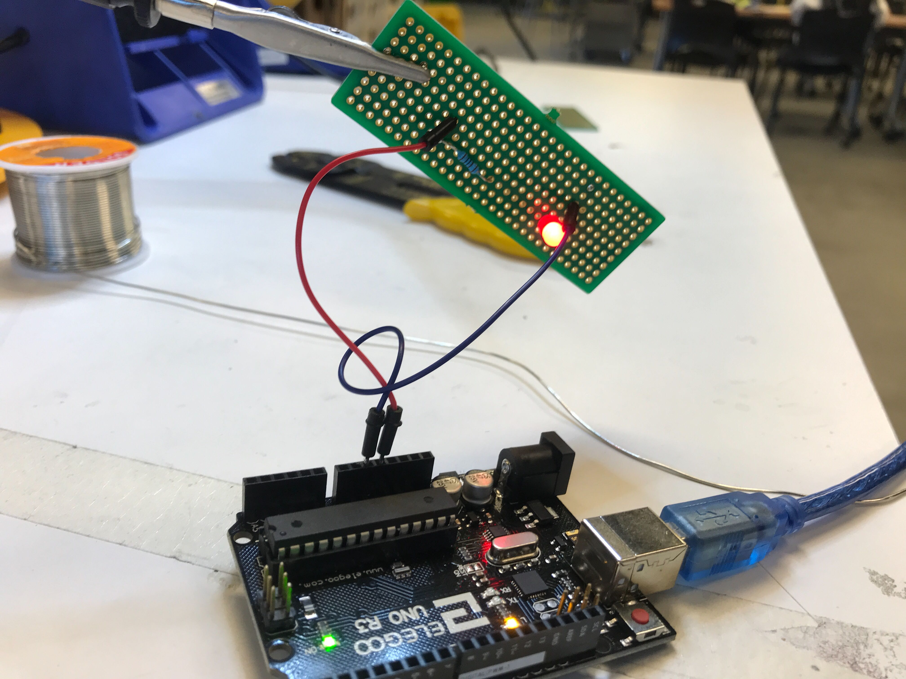
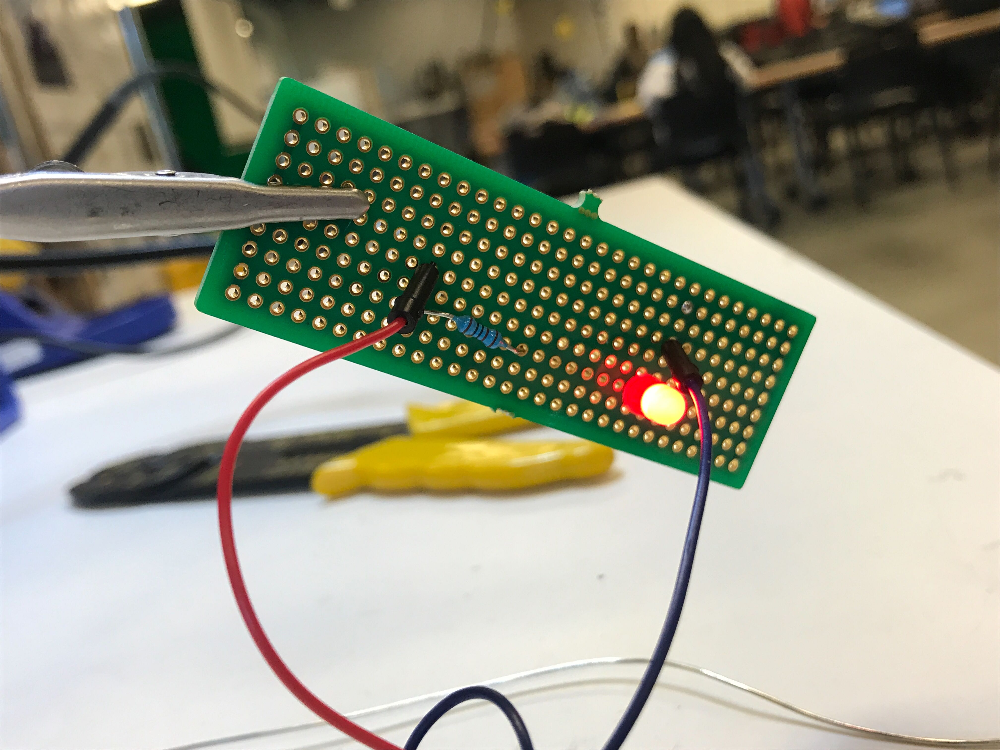
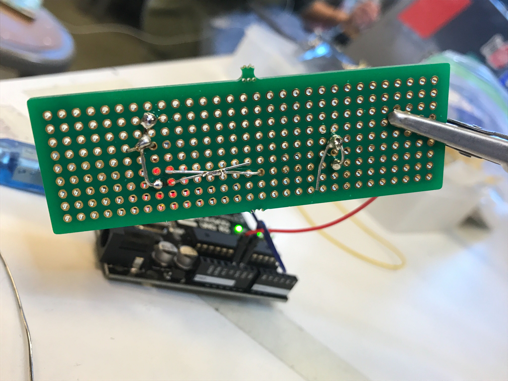
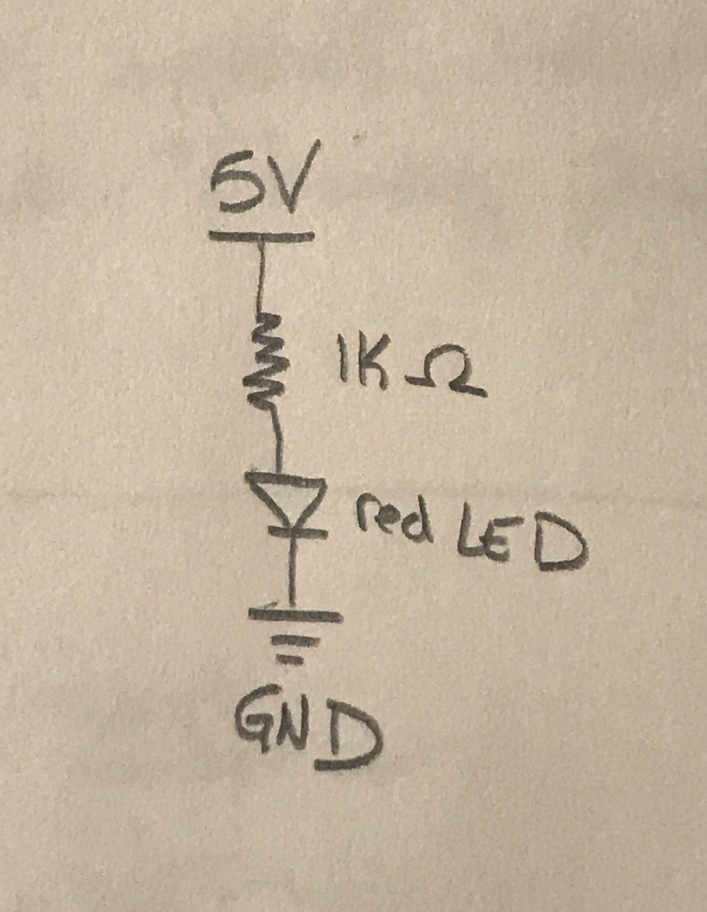

My circuit consists of a red LED and a 1k ohm resistor soldered on a perf board. My arduino is wired to the board and the LED is powered by 5V.
  The photoresistor works the same as assignment 3. The photoresistor can have a very low resistance, allowing the 5V to flow to ground and damage the arduino. Therefore an additonal 10k ohm resistor is needed. 10k ohms is safe since a maximum of 0.002A can flow through the arduino. 5V / 0.02A = 250 ohms. Therefore 10k ohms is safe.
